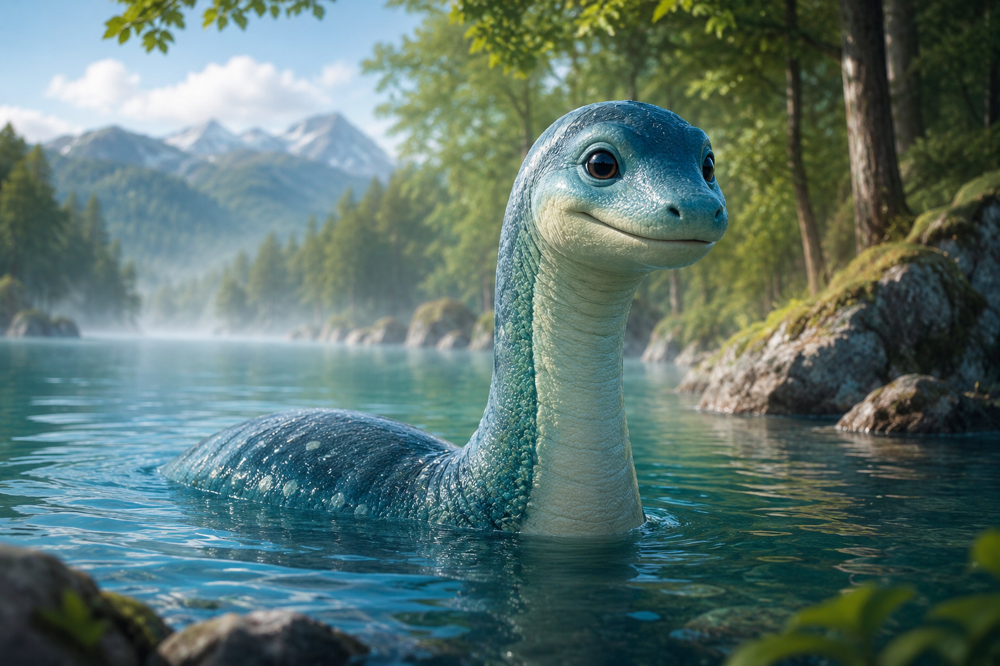

トップ > UMA図鑑
ネッシーとは？

ネッシーはスコットランドのネス湖で目撃される未確認生物です。 1933年頃から世界中で有名になりました。 首の長い恐竜のような姿で目撃されています。
現在でも写真や動画がたびたび話題になり、 世界中のUMAファンから人気があります。
ネッシーの特徴
- 首が長い
- 水中に住むと言われる
- 世界で最も有名なUMA
トップ > UMA図鑑

ネッシーはスコットランドのネス湖で目撃される未確認生物です。 1933年頃から世界中で有名になりました。 首の長い恐竜のような姿で目撃されています。
現在でも写真や動画がたびたび話題になり、 世界中のUMAファンから人気があります。